FreeBSD
In this example we will be using FreeBSD-12.3-RELEASE-amd64-dvd1.iso
once you booted off the iso select Install
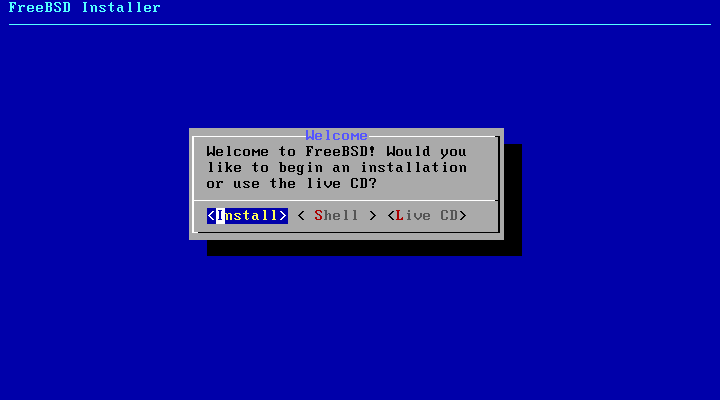
Confirm the default keymap selection with enter
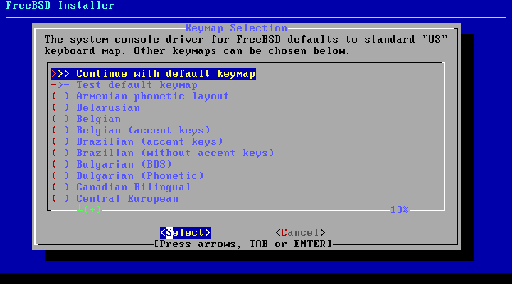
Set your hostname
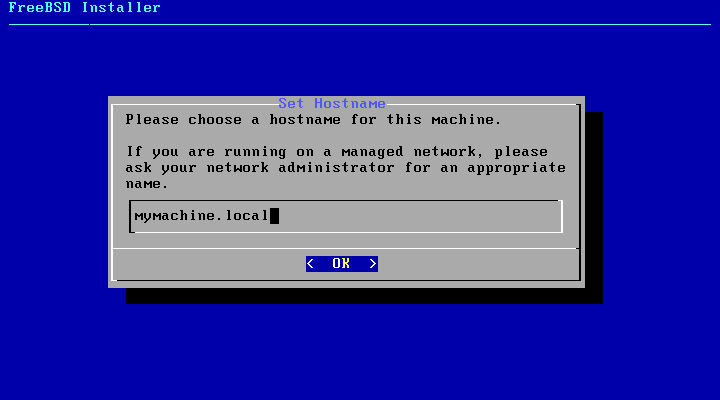
Leave the default settings and confirm again with enter
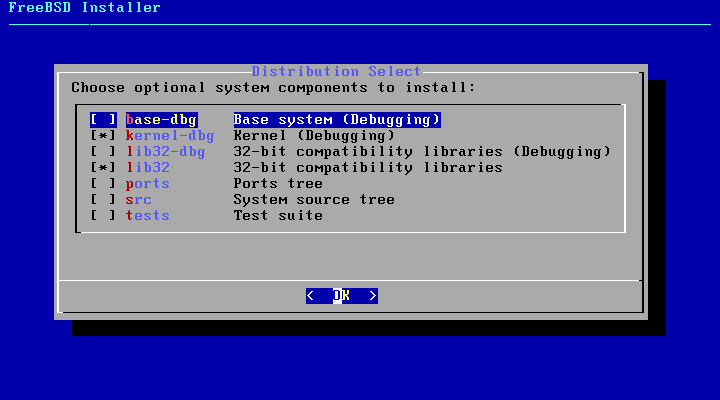
In a single disk setup use Auto (UFS) in a mutlidisk setup Auto (ZFS) with mirror for redundancy
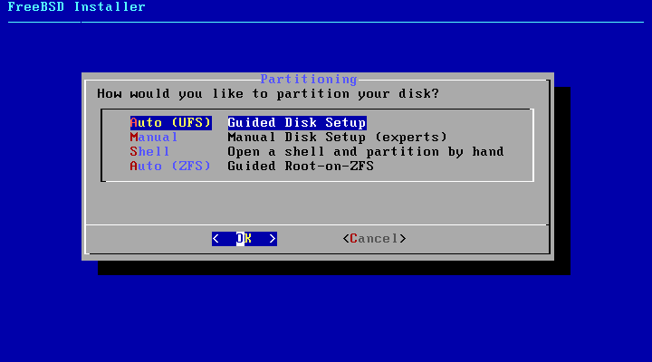
Confirm “Entire Disk” with Enter
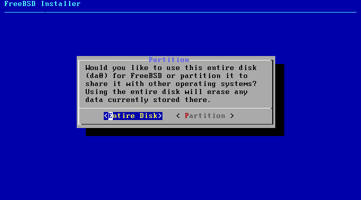
Select “MBR”
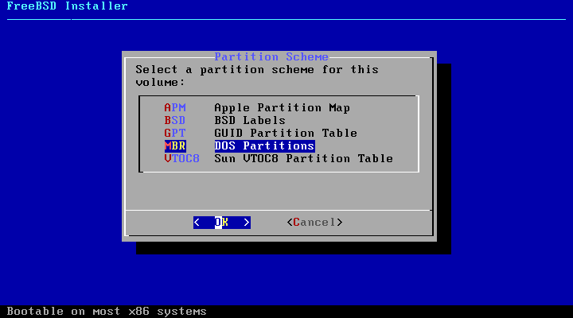
Confirm “Finish” with Enter
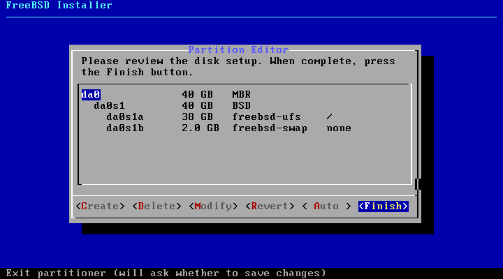
Confirm “Commit”
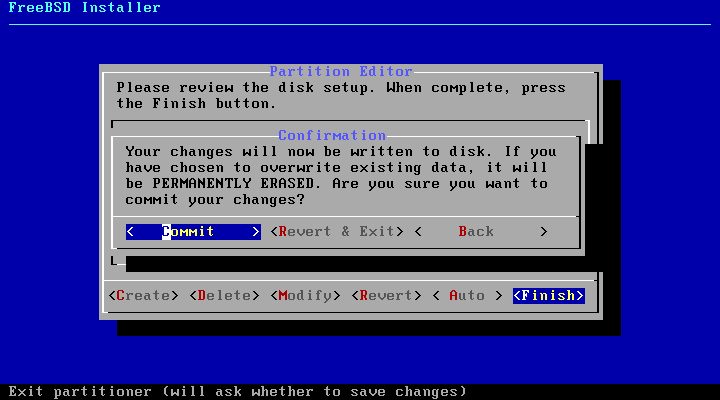
Wait for the unpacking to finish
Type a secure password
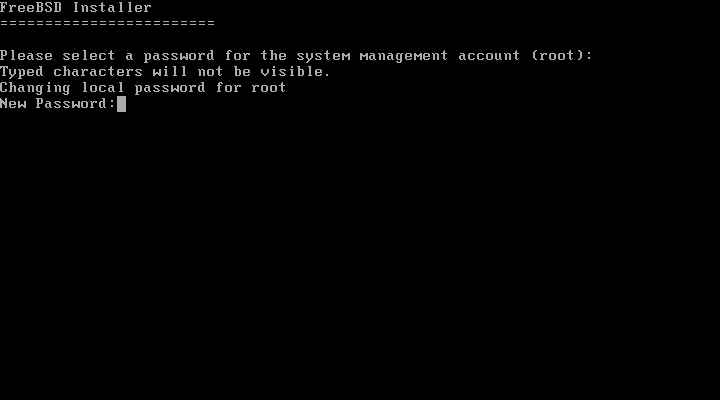
Confirm your password
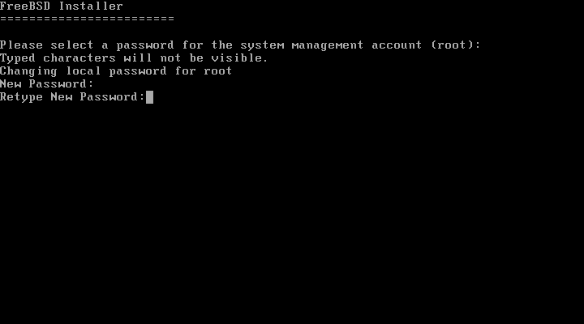
Select your network interface
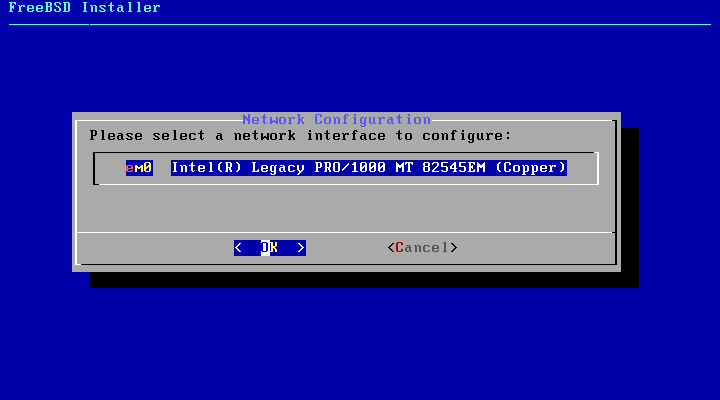
select “Yes” to configure IPv4
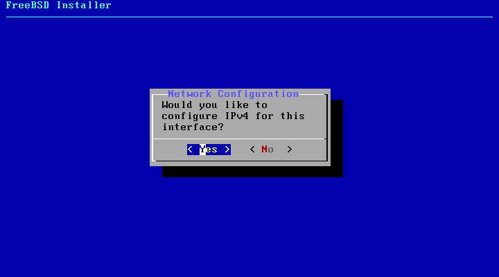
Select “No” to configure it manually
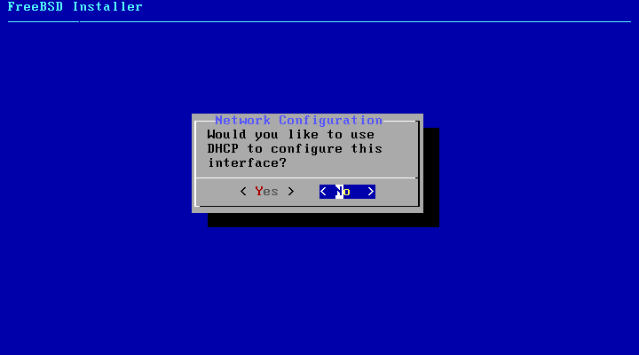
Set your IP address and confirm with “OK”
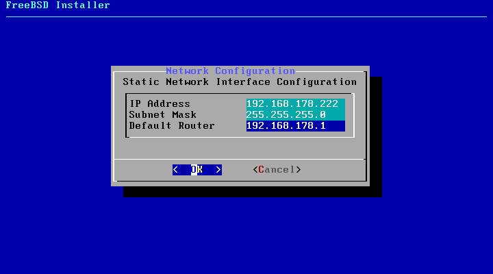
Select “No” to disable IPv6
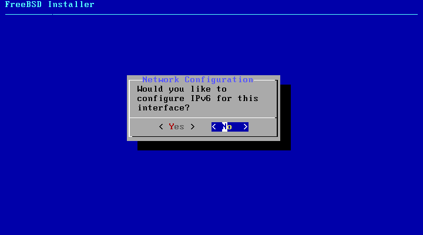
Set IPv4 DNS #1 to 9.9.9.9 and IPV4 #2 to 149.112.112.112
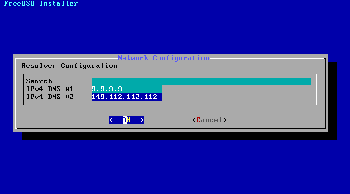
Set the timezone of your server
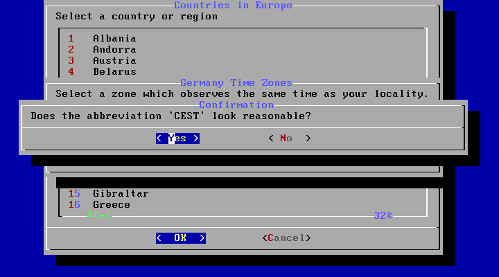
Set the Date & Time or Skip if it looks accurate
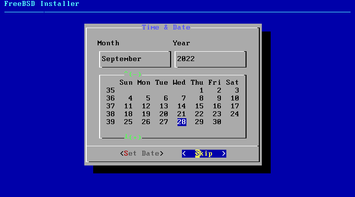
Leave the default settings and confirm with Enter
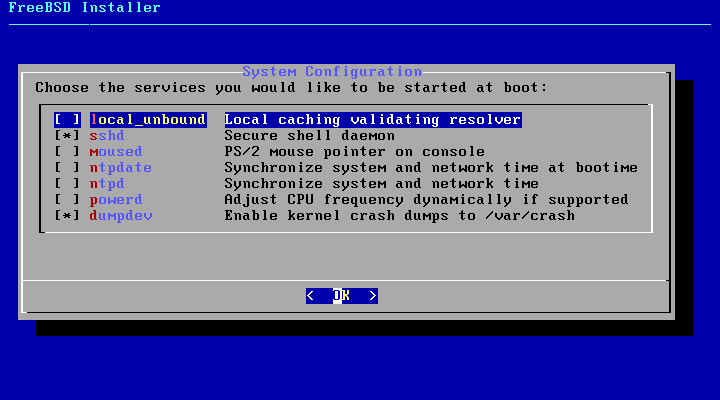
Confirm once again with enter
Select “No” to add no additional users to the server
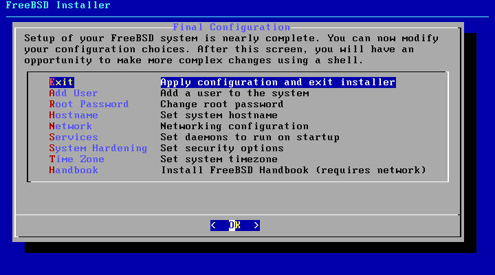
Hit Enter to exit the setup
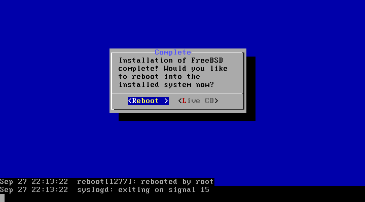
Select “No”
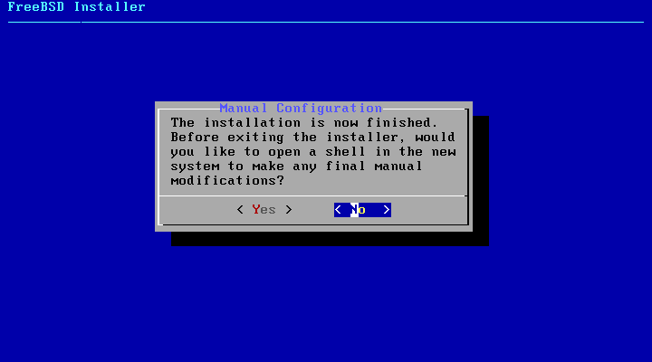